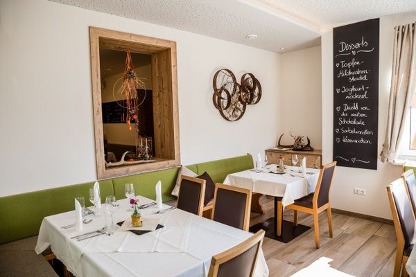
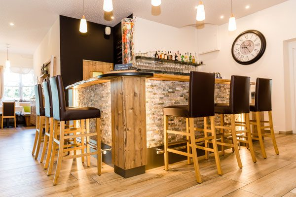

Dienstag, Mittwoch, Donnerstag – mittags
Mittagskarte. Das schnelle, gute Mittagessen für alle, die zwischen 11:30 und 15:00 Uhr Zeit haben.
Menü & Wein
Traditionell-steirische Wirtshausküche, verfeinert mit modernen Gourmetgerichten – überwiegend aus regionalen, saisonalen und hochwertigen Produkten unserer Region.
Karten nach Wochentag
Mittagskarte. Das schnelle, gute Mittagessen für alle, die zwischen 11:30 und 15:00 Uhr Zeit haben.
Abendkarte. Ab 17:30 Uhr das größere Programm: Wirtshausklassiker und Gourmetgerichte.
Speisekarte. An diesen beiden Tagen gilt die durchgehende Speisekarte des Hauses.
Warum hier keine Preise stehen: Auf der bestehenden Website sind Mittagskarte, Abendkarte und Weinkarte ausschließlich als PDF-Download hinterlegt. Wir geben deshalb keine Gerichte oder Preise an, die wir nicht belegen können. In der Live-Version wird daraus eine gepflegte Online-Karte: Kategorien, Gerichte, Preise, Allergene – lesbar am Handy, teilbar per Link, in zwei Minuten aktualisiert.
Das Herzstück
Neben unserem kreativen, mehrgängigen Überraschungsmenü erwartet Sie ein begehbarer Weinkühlschrank mit über 200 erlesenen nationalen und internationalen Weinen.
Sie wählen nicht aus der Karte – Sie lassen sich führen. Was auf den Teller kommt, entscheidet die Saison, der Markt und die Idee des Tages. Wir verbinden dabei die traditionell-steirische Wirtshausküche mit modernen Gourmetgerichten.
Bitte vorbestellen: Sagen Sie uns bei der Reservierung Bescheid, wenn Sie das Überraschungsmenü möchten – und teilen Sie uns Unverträglichkeiten gleich mit, damit wir planen können.


Weinkarte
Über 200 erlesene nationale und internationale Weine lagern bei uns temperiert und begehbar. Sie gehen hinein, schauen sich um und nehmen die Flasche mit an den Tisch – das ist ein anderes Erlebnis, als eine Karte durchzublättern.
Die vollständige Weinkarte liegt im Haus auf. Wer sich vorab orientieren möchte, fragt sie einfach an; in der Live-Version steht sie als durchsuchbare Online-Weinkarte bereit, nach Herkunft, Sorte und Preis filterbar.
Vorab informieren
Sie planen einen Besuch, ein Essen mit Geschäftspartnern oder eine Familienfeier und möchten die aktuelle Karte vorab sehen? Wir schicken sie Ihnen zu.
Telefonisch: +43 3475 21 76